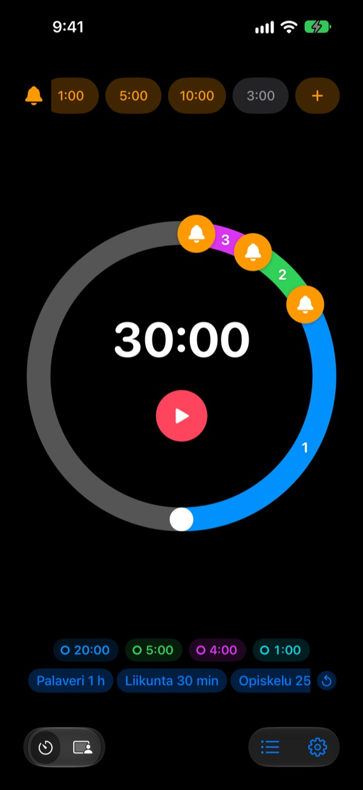
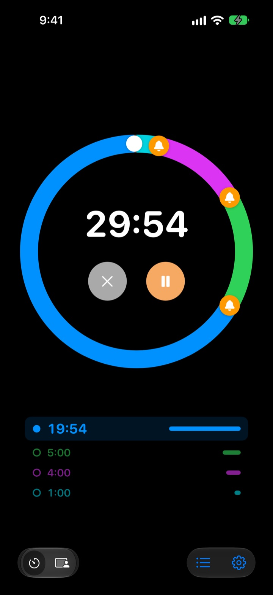
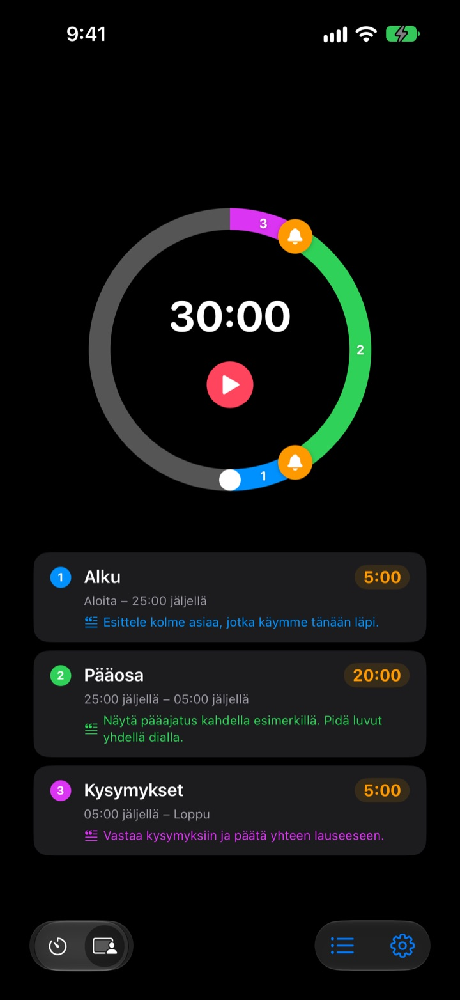
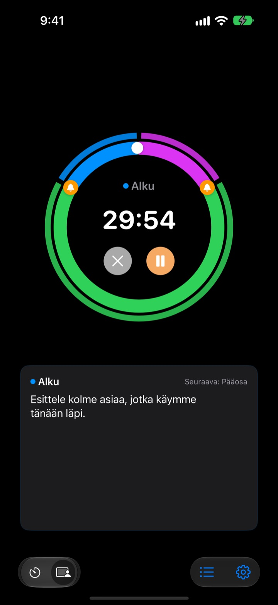

Ei vasta lopussa,
vaan ennen sitä
5 minuuttia ennen kuin esitys päättyy, 3 ennen kuin palaveri loppuu. Rereminder muistuttaa jokaisessa valitsemassasi kohdassa, joten kelloa ei tarvitse vilkuilla koko ajan.
Muistutukset ovat ilmaisia ja rajattomia. iPhonelle, Apple Watchille ja Macille.

Kokeile tässä
Valitse kesto ja muistutukset ja paina punaista painiketta. Minuutti kuluu sekunnissa, ja jokainen muistutus kuuluu omalla hetkellään.
Onko ajastin soinut vasta, kun oli jo myöhäistä?
Tavallinen ajastin soi vasta nollassa. Esitys loppuu ennen johtopäätöksiä, oppitunti katkeaa ilman yhteenvetoa ja palaveri valuu seuraavaan ilman päätöstä. Et tarvitse merkkiä siitä, että aika loppui, vaan muistutuksen, kun vielä ehtii lopettaa hallitusti.
Muistutukset ennen loppua, niin monta kuin haluat
Vedä kellotaulun kellot kohtaan 10, 5 tai 1 minuutti ennen loppua tai mihin tahansa muualle. Määrää ei ole rajattu, ja jokaisella muistutuksella voi olla oma viesti, esimerkiksi ”Kokoa diat”.
Näytön ollessa pimeänä jäljellä oleva aika näkyy lukitulla näytöllä ja Dynamic Islandissa, ja Apple Watch napauttaa ranteeseen.

Jaa esitys osiin
Alustus 5 minuuttia, pääosa 20, kysymykset 5. Anna jokaiselle osalle nimi ja käsikirjoitus. Aina kun osa vaihtuu, saat muistutuksen sen nimellä, ja aikataulu pitää lähes itsestään. (Pro)

Mitä sanot nyt, näkyy näytöllä
Ajastimen käydessä nykyisen osan käsikirjoitus ja seuraava osa näkyvät isolla. Jos menet yli nollan, laskenta jatkuu, joten tiedät tarkalleen, paljonko aika venyi. (Pro)

Alkuun kolmessa vaiheessa
- 1
Aseta aika
Kierrä kellotaulua tai napauta aikaa ja kirjoita se. Yksi kierros on 60 minuuttia, kaksi kierrosta 120.
- 2
Lisää muistutukset
Napauta ylhäältä tarraa, kuten 1:00 tai 5:00, tai vedä kello kellotaululle.
- 3
Käynnistä ja unohda
Lukitse iPhone. iPhone ja Apple Watch muistuttavat jokaisessa asettamassasi kohdassa.
Suosituimmat asetukset
- 20 minuutin esitys
- 5 min ennen ”Siirry johtopäätöksiin”, 1 min ennen ”Kiitä”
- 45 minuutin oppitunti
- 10 min ennen ”Kotitehtävät”, 3 min ennen ”Yhteenveto”
- 30 minuutin palaveri
- 5 min ennen ”Kirjaa päätökset”
- Pilates- tai joogatunti
- Sessiotila, yksi osa liikesarjaa kohden (Pro)
- 25 minuutin opiskelu
- 5 min ennen, sitten tauko
- 3 minuutin palautus sarjojen välissä
- 30 s ennen ”Valmistaudu seuraavaan sarjaan”
- Tunnin mentorointi
- 15 ja 5 min ennen
Tallenna usein käyttämäsi asetukset malleiksi ja käynnistä ne yhdellä napautuksella (Muisti-tasosta alkaen). Ajastimen voi myös käynnistää tai pysäyttää Pikakomennoilla ja Sirillä.
Muistutukset ovat ilmaisia. Maksa vain, jos haluat sen muistavan.
Ilmainen
- Rajattomasti muistutuksia
- Oma viesti jokaiseen muistutukseen
- Live Activity lukitulla näytöllä ja Dynamic Islandissa
- Muistutus, kunnes vastaat, ja lopuksi soiva hälytys
- Apple Watch -appi ja Macin valikkorivi
- Kaikki teemavärit
Muisti · Pro
- Muisti: tallenna asetukset malleiksi ja käynnistä yhdellä napautuksella
- Muisti: avaa appi uudelleen, ja kaikki on kuten jätit
- Pro: kaikki Muistin ominaisuudet sekä sessiotila osien nimillä ja käsikirjoituksilla
- Pro: yliaika, historia ja tilastot
Jokaiseen tasoon voit valita vuositilauksen tai kertaostoksen ikuisesti. Sessiotilaa, yliaikaa ja historiaa voi kokeilla muutaman kerran ennen maksamista.
Ei mainoksia. Ikuinen passi avaa lisäksi kaikki Leeon tekemät apit.
Usein kysyttyä
Muistutus ei soinut.
Syy on lähes aina luvissa tai keskittymistilassa. Tarkista ilmoituslupa apissa kohdasta Asetukset › Ilmoitustapa. Jos käytät keskittymistilaa, lisää Rereminder sallittuihin appeihin iOS:n kohdassa Asetukset › Keskittyminen. Äänettömässä tilassa tulee vain värinä. Jos Rereminder on kohdassa Asetukset › Ilmoitukset › Ajoitettu yhteenveto, ilmoitukset pidätetään, joten poista se sieltä.
Huomaanko lopun äänettömässä tilassa?
Kyllä. Laita ”Soita lopuksi hälytys” päälle, niin se soi kovaa myös äänettömässä tilassa tai keskittymisen aikana. Valinnalla ”Muistuta, kunnes vastaan” se toistuu, kunnes napautat ilmoituksessa Pysäytä tai Torkku.
Apple Watch ei synkronoidu.
Avaa apissa Asetukset › Omat laitteet. Sieltä näet, mikä vaihe puuttuu. Kellon pitää olla pariliitetty tähän iPhoneen, Rereminderin pitää olla asennettuna kelloon, ja se pitää avata kerran kellossa asennuksen jälkeen. Sen jälkeen ajastin siirtyy, vaikka kellon appi olisi kiinni.
Mac näkyy yhdistämättömänä.
”Yhdistetty” tarkoittaa, että appi oli auki kyseisellä Macilla viimeisen 10 minuutin aikana, joten juuri herännyt Mac ilmestyy muutaman minuutin päästä. Molemmissa laitteissa pitää olla sama iCloud-tili ja iCloud Drive päällä. Macin appi vaatii macOS 26:n tai uudemman.
Maksoin, mutta mitään ei avautunut.
Napauta tasojen näytössä ”Palauta ostot”, kun olet kirjautunut samalla Apple-tilillä, jolla maksoit. Ikuiset ostot palaavat, vaikka poistaisit apin tai vaihtaisit laitetta.
Tallentamani mallit ovat lukossa.
Ne ovat yhä tallessa. Ilman Muistia tai Prota ne näkyvät lukittuina ja avautuvat heti, kun ostat jommankumman.
Miten saan rahani takaisin?
Hyvitykset hoitaa Apple. Pyydä hyvitystä osoitteessa reportaproblem.apple.com sillä Apple-tilillä, jolla maksoit. Jos jokin oli rikki, kerro siitä myös minulle, ettei seuraava törmää samaan.
Voiko sitä kokeilla asentamatta?
Avaa m1zz.github.io/rereminder iPhonessa, niin ajastin käynnistyy heti App Clipinä. Kellotaulu ja muistutukset ovat mukana. Mallit, sessiotila ja kellon appi ovat täydessä apissa.
Millä laitteilla se toimii?
iPhone, jossa on iOS 26 tai uudempi, Apple Watch, jossa on watchOS 11.6 tai uudempi, ja Mac, jossa on macOS 26 tai uudempi. iPadia ei vielä tueta. Appi on saatavilla 24 kielellä.
Missä tietoni ovat?
Ajastimet, mallit, osien nimet, käsikirjoitukset ja historia pysyvät laitteessasi ja katoavat, kun poistat apin. Appi lähettää vain nimettömiä käyttötilastoja, jotka auttavat parantamaan sitä. Tietosuojakäytännössä kerrotaan tarkalleen, mitä.
Kysyttävää tai palautetta? Kirjoita osoitteeseen leeo@kakao.com. Vastaan yleensä 2–3 päivässä.